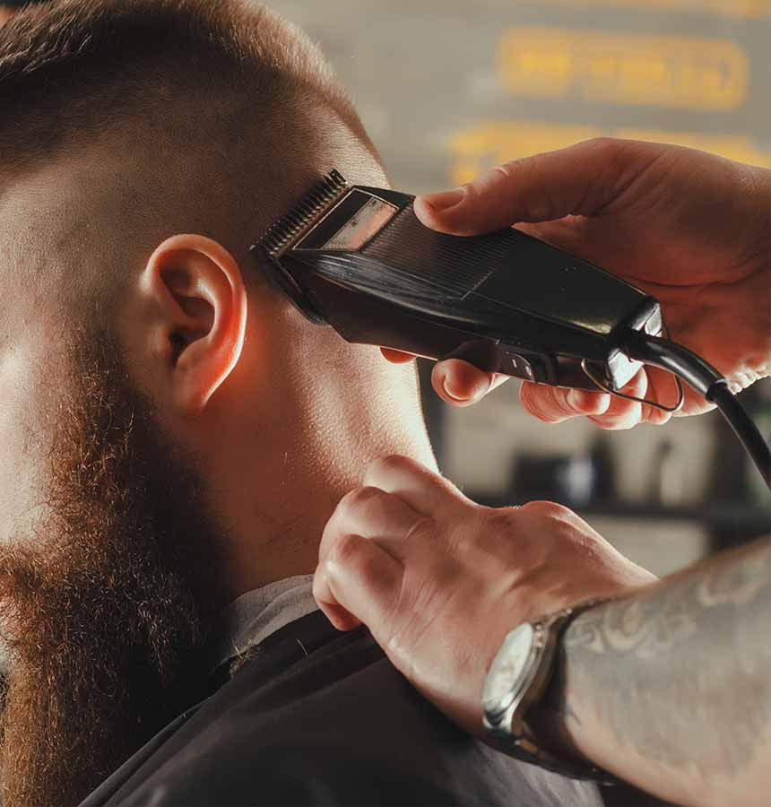
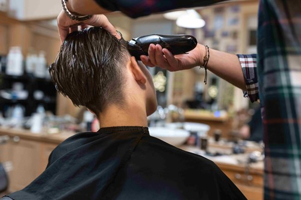

Mi az a gépi hajvágás – és miért nem mindegy, ki csinálja?
A gépi hajvágás a legnépszerűbb férfi fodrászati technika – mégis rengeteg különbség van aközött, amit egy átlagos fodrász és egy profi barber nyújt. Nem csak a végeredményen látszik meg, hanem azon is, hogy az elvégzett vágás mennyire marad rendezett két látogatás között.
Egy tapasztalt barber a gépet nem mechanikusan használja, hanem eszközként – a kézügyesség, a szem és az évek tapasztalata együtt adja azt a precizitást, ami miatt egy jól sikerült gépi vágás hetekig tisztán tartja a formát. Ez az, amit Budapesten a legjobb barber shopokban megkaphatsz.

A legnépszerűbb gépi hajvágás stílusok
A gépi technika rendkívül sokféle frizurát tesz lehetővé – a lecsupaszított buzz cuttől a lágy, fokozatos taper fade-ig. Nézzük, melyek a legkeresettebb stílusok ma Budapesten.
Skin fade
A bőrig lecsupaszított oldal fokozatosan megy át a hosszabb tetőrészbe. Éles, modern, rendkívül tiszta hatású vágás.
Taper fade
Lágyabb átmenet, amely természetesebb összhatást ad. Elegánsabb alkalmakra is tökéletesen hordható.
High fade
Magasan kezdődő, drámai átmenet – karakteres, határozott stílus azoknak, akik nem félnek feltűnőbbnek lenni.
Buzz cut
A legtisztább és legpraktikusabb gépi vágás. Egyenletes hossz az egész fejen – egyszerű, maszkulin és mindig rendezett.

Gépi hajvágás a 7. kerületben – barber shop a Blaha közelében
Sokan azt hiszik, hogy a gépi hajvágás egyszerű – elvégre csak egy gép, néhány fésű és kész. A valóság ennél jóval összetettebb. A profi borbélyok különböző géptípusokat, pengeszélességeket és kiegészítőket használnak attól függően, hogy milyen hajtípuson, milyen stíluson dolgoznak. Egy skin fade például egészen más gépet és technikát igényel, mint egy buzz cut.
A legtöbb otthoni gépi vágás éppen itt bukik meg: nem a szándék hiányzik, hanem az eszköz és a kézügyesség. A tükörből nem látszik a tarkó, az átmenetek egyenetlenek maradnak, a körvonal nem szimmetrikus. Egy barber shopban – legyen az a Dob utcában, a Kertész utcában, a Klauzál utcában vagy a Király utcában – ezek a problémák nem léteznek. A barber látja az egészet, és pontosan tudja, hogyan kell a gépet mozgatni, hogy az átmenet tökéletes legyen.
- Különböző pengeszélességek más-más hatást adnak
- A hajtípus meghatározza, melyik technika működik
- Az egyenletes átmenet csak megfelelő szögből és kézzel kivitelezhető
- A körvonal kialakítása a gépi vágás leglátványosabb, de legnehezebb része
Milyen gyakran érdemes visszajárni gépi vágásra?
A gépi vágásoknak, különösen a fade technikáknak, az a sajátossága, hogy viszonylag gyorsan kilátszik a növekedés – ez egyben a stílus egyik legfontosabb jellemzője is. A tiszta, friss hatás megtartásához rendszeres visszajárás szükséges.
- Skin fade és high fade: 2–3 hetente ajánlott
- Taper fade: 3–4 hetente
- Buzz cut: 2–4 hetente, az egyéni növekedési ütemtől függően
- Kombinált gépi + ollós vágás: 4–5 hetente
Miért válaszd a Bosphorust gépi hajvágáshoz Budapesten?
A Bosphorus barber shop pontosan az, amit egy igényes férfi elvár egy profi barber shoptól Budapesten: személyes odafigyelés, tapasztalt borbélyok és egy olyan légkör, ahol sosem érzed magad siettetett ügyfélnek.
Ha barber Budapest keresésre indulsz, és a 7. kerületben keresel minőségi gépi hajvágást – legyen szó skin fade-ről, buzz cutről vagy taper fade-ről – a Bosphorus az egyik legjobb választás a Blaha, Erzsébet körút, Király utca és Klauzál utca környékén.
- Tapasztalt barber shop, profi gépi technikákkal
- Barber Budapest 7. kerület – könnyen megközelíthető helyszín
- Személyre szabott stílus, konzultációval
- Szakálligazítás és teljes férfi grooming is elérhető
Foglalj időpontot gépi hajvágásra Budapesten
Profi skin fade, taper fade vagy buzz cut – a Bosphorus barber shopban minden gépi hajvágás precíz, személyre szabott és tartós eredményt hoz. Foglalj most, és tapasztald meg a különbséget.